Chapter 2. 연산자¶
'혼자 공부하는 자바 - 신용권' 3장 학습 내용
1절. 연산자와 종류
2절. 연산 방향과 우선순위
3절. 단항 | 이항 | 삼항 연산자
1절. 연산자와 종류¶
연산자(Operator)와 관련 정의¶
- 연산자
- 연산에 사용되는 표시나 기호
- 피연산자(operand)
- 연산자와 함께 연산되는 데이터
- 연산식(expression)
- 연산자와 피연산자를 사용한 연산 과정 기술
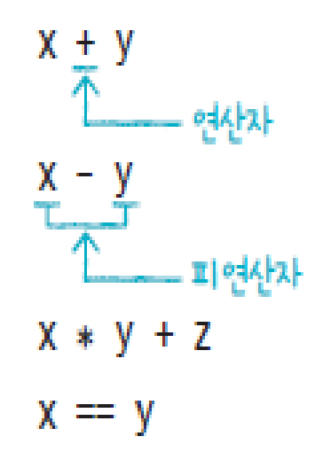
JAVA 연산자¶
- 산출되는 값의 타입이 연산자별로 다름을 주의
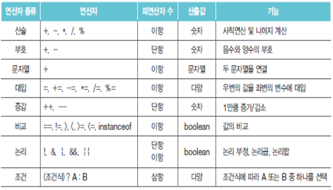
- 연산식은 반드시 하나의 값 산출
- 하나의 값이 오는 모든 자리에 연산식 사용 가능
- 변수에 연산식의 값 저장 가능
- 다른 연산식의 피연산자 위치에 연산식 대입 가능
2절. 연산 방향과 우선순위¶
연산 방향¶
-
우선순위에 따라 수행
- 단항 -> 이항 -> 삼항
- 산술 -> 비교 -> 논리 -> 대입
-
우선순위가 같은 연산자는 왼쪽에서 오른쪽 방향으로 수행
- 예외 : 대입 연산자
연산 방향¶
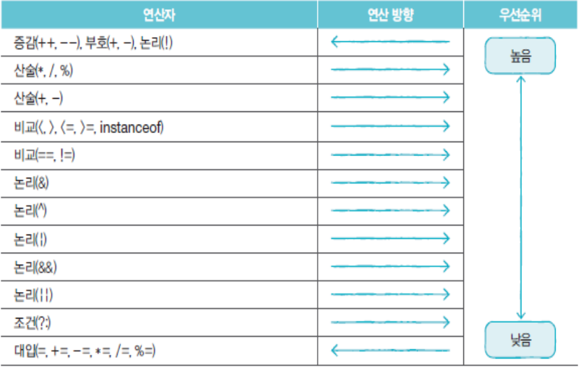
괄호 사용¶
- 먼저 처리할 연산식을 괄호로 묶기
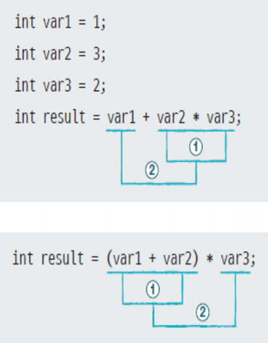
연산자 정리¶
| 키워드 | 설명 |
|---|---|
| 연산자 | 연산의 종류를 결정짓는 기호 |
| 피연산자 | 연산식에서 연산되는 데이터 |
| 연산 방향 | 연산자를 사용했을 시 연산되는 방향 |
| 연산 우선순위 | 연산자들이 복합적으로 구성되면 우선적으로 연산되는 연산자이며 순서를 임의로 정하고 싶을 경우 괄호 사용 |
3절. 단항 | 이항 | 삼항 연산자¶
피연산자 수에 따른 구분¶
| 구분 | 종류 | 예시 |
|---|---|---|
| 단항 연산자 | 부호, 증감 연산자 | ++x; |
| 이항 연산자 | 산술, 비교, 논리 연산자 | x + y; |
| 삼항 연산자 | 조건 연산자 | (sum > 90) ? "True" : "False"; |
3 - 1 ) 단항 연산자¶
부호 연산자¶
- boolean 타입과 char 타입을 제외한 기본 타입에 사용
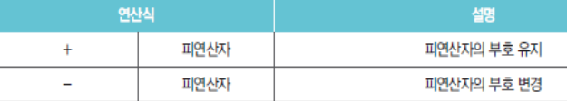
- 정수 및 실수 타입 변수 앞에 붙는 경우
- 부호 연산의 결과는 int
증감 연산자¶
- booleaan 타입 외 모든 기본 타입 피연산자에 사용 가능
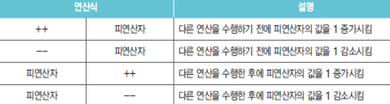
- 증가 연산자(++)
- 피연산자 값에 1을 더한 결과를 다시 피연산자에 저장
- 감소 연산자(--)
- 피연산자 값에 1을 뺀 결과를 다시 피연산자에 저장
- 변수의 앞 뒤 어디에서든 사용 가능
- 다른 연산자와 함께 사용될 경우 증감 연산자 위치에 따라 결과가 달라질 수 있음을 주의
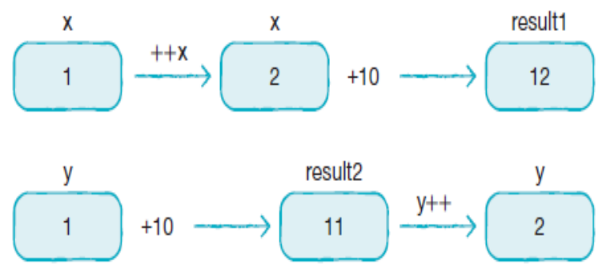
논리 부정 연산자(!)¶
- true -> false로, false -> true로 변경
- 조건문과 제어문에서 조건식 값을 부정하며 실행 흐름 제어
- 토글(toggle) 기능
- boolean 타입에만 사용 가능
3 - 2 ) 이항 연산자¶
산술 연산자¶
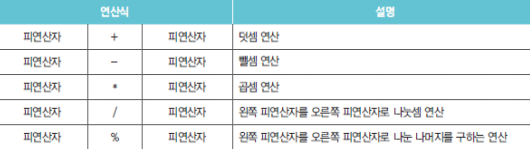
- 피연산자 타입이 동일하지 않을 경우 아래 규칙에 따라 일치시킨 후 연산 수행
- 피연산자가 byte, short, char 타입인 경우 모두 int 타입으로 변환
- 피연산자가 모두 정수 타입이고 long 타입이 포함될 경우 모두 long 타입으로 변환
- 피연산자 중 실수 타입이 있을 경우 허용 범위 큰 실수 타입으로 변환
문자열 결합 연산자(+)¶
-
- 연산자의 피연산자 중 한 쪽이 문자열인 경우
비교 연산자¶
- 피연산자의 대소 비교하여 true / false 산출
- 조건문이나 반복문에서 실행 흐름 제어
- 동등 비교 연산자는 모든 타입에 사용 가능
- 크기 비교 연산자는 boolean 외 모든 기본 타입에 사용 가능
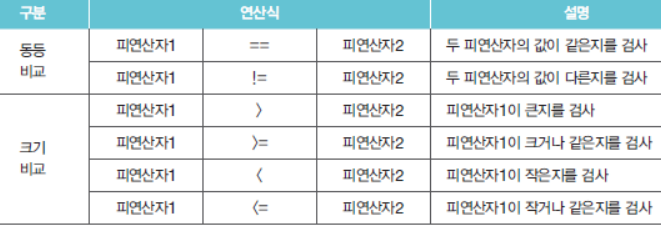
논리 연산자¶
- boolean 타입만 사용 가능
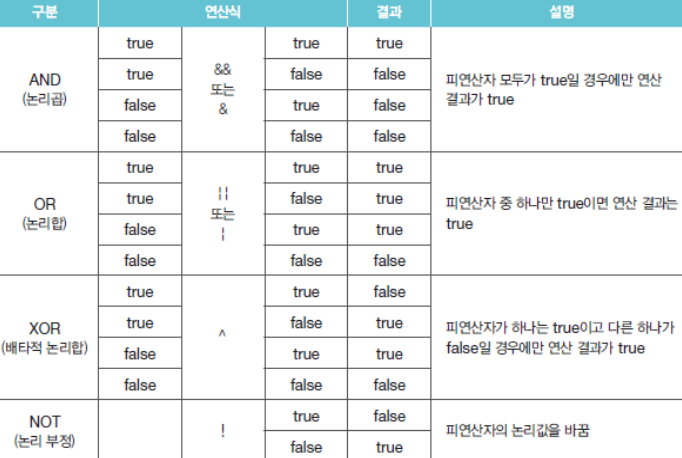
대입 연산자¶
- 오른쪽 피연산자의 값을 왼쪽 피연산자인 변수에 저장
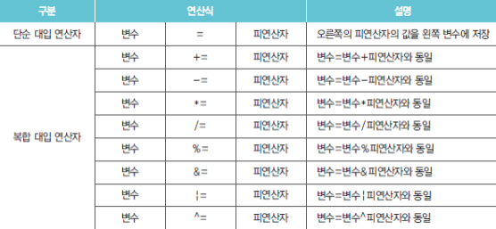
3 - 3 ) 삼항 연산자¶
삼항 연산자¶
- 3개의 피연산자를 필요로 하는 연산자
- ? 앞의 조건식에 따라 콜론 앞뒤의 피연산자 선택
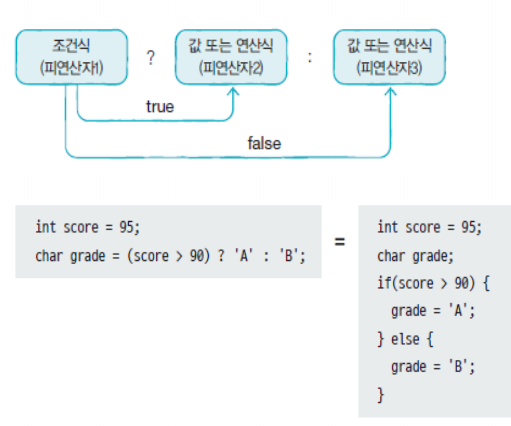
연산자 종류 정리¶
| 키워드 | 설명 |
|---|---|
| 증감 연산자 | ++, --의 연산자를 통해 변수의 값을 1씩 증가, 감소 |
| 비교 연산자 | ==, !=의 연산자를 통해 값의 동등 유무를 비교하고 boolean 값 산출 |
| 논리 연산자 | &&, |
| 대입 연산자 | =, +=, -=의 연산자를 통해 값을 왼쪽에 대입하거나 연산 후 대입 |
| 삼항 연산자 | (조건식) ? A : B를 통해 조건이 true일 경우 A, false일 경우 B 산출 |
- 예제 1. 연산자 예제
SourceCodeChecking